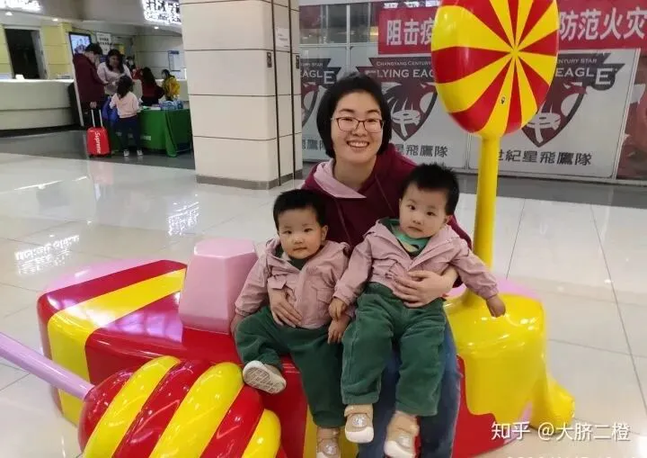
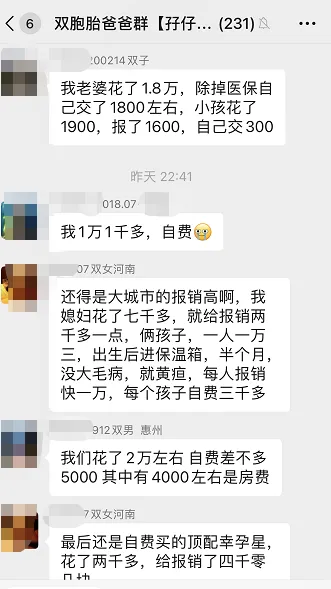
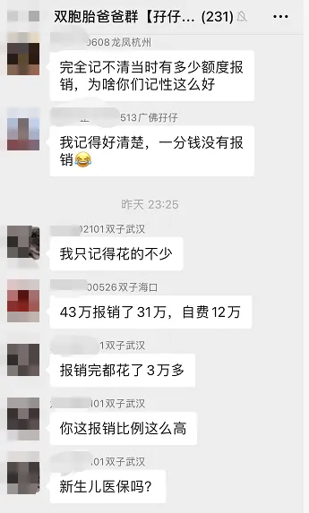
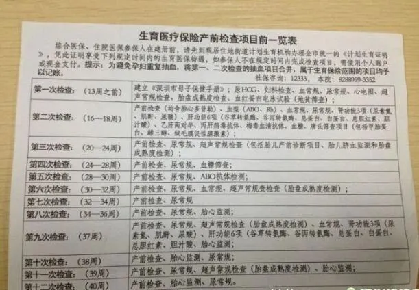
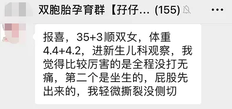
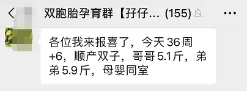
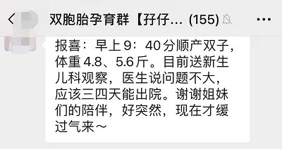

孖仔帮
公众号ID：twinsbang
关注
文|圆圈妈
网图|侵删
咱们双胞胎爸爸群有一位资深育儿大佬，江湖人称栋哥，他家有一对1岁半的双胞胎姐妹花。
看过推文《双胞胎终于睡整夜觉，你奋斗了365天，这位奶爸只花了3个半月》应该猜出来了，他就是知乎高赞博主【大脐二橙】，双胞胎爸爸群内小白准爸们心目中的育儿界山鸡哥；双胞胎同城群·北京站的妇女之友兼妈妈导师；现任双胞胎教育群新晋舔屏对象。
近日，他分享的一段在北京生双胞胎用医保只花了593元的经历登上了央视新闻，被三大主流媒体争相报道，原文如下：
妻子怀了双胞胎，因为属于超高危，孕前期建档医院查出单绒双羊后，立马安排转到北京宣武医院，这家医院是北京危重孕产妇抢救中心之一。
2019年7月23日，妻子肚子不舒服，早上赶紧去宣武看急诊，紧接着就被医生留下了，说是有宫缩，这一天，孕周刚刚34周+2天。
因为生产的过程很长很复杂，我简单总结一下：
1. 34周+2天早产，双胞胎一对，医院内部协调立马转院北大妇儿，住进了NICU。
2.生产前，主任很诧异为什么早产，给我妻子抽血化验，产后几小时出了化验结果，显示丙谷转氨酶高达367。确诊是妊娠期急性脂肪肝，一种听起来似乎不可怕，但是发病率在万分之几，死亡率很高的妊娠期并发症。
入院的时候，我缴纳了3000元押金。接着就是10天非常惊险的治疗，产科发起会诊三次，每天各科医生轮流来探视，妻子直言为什么这家医院的医生这么好呢？而我每天都在想，今天会不会让我续费，因为那些治疗和药品应该价格不便宜，3000元应该早就用完了。
出院的时候，医院让留下社保卡就可以走了，一周后来结算，我再次诧异。
一周后，我带了2万块钱，想着肯定是要补交费用的。哪知道窗口噼里啪啦一顿算，把卡和票据给我了，没让补交，还返还了我一部分费用，我有点蒙，仔细看了下发票，吃了一惊。就是下面这张发票。
花费39370元，自付593元，报销比例98.49%，自付的部分好像主要是使用了镇痛泵和护士每天通乳。
这样的医保报销比例，这样快捷、高效，这样高超的医疗技术，不知道有几个国家能超过我们。
作为普通老百姓，太高大上的咱也很难讲出来，只有这样朴实的真实感受。生有米，病有医，我就觉得生活在中国，真好。
蘑菇妈妈和大琦、二珵▲
此分享一出，爸爸群瞬间炸锅了，纷纷表示：果然首都就是硬核，福利也是首屈一指的，尔等小众城市表示望尘莫及。
都说养一对双胞胎很烧钱，是不是从怀上或生娃那一刻开始，就有星星之火可以燎原的趋势呢？
那么今日这篇推文来做一个小调查：生一对双胞胎，你烧了多少钱？
注意，仅限孕育环节，包括备孕，产检，保胎，生产。当然，有部分人是试管双胎，可能费用更高些，也可计入期内；养育环节的那些奶粉尿不湿...不算（这个根本不敢细算啊！）
欢迎护住小心脏，默默投票，并在留言区大声说出：为了生一对双儿，你究竟烧了多少钱。
我先来！
【大脐二橙】98%的报销比例着实让人羡慕，但我们大深圳的医保福利也不赖哦。
我是政策内的一胎，综合医疗一档，在市二医院建档，产检挂号时走生育险每次仅需1块钱，不管正高副高还是主治。
第一次产检时是孕12周，要做的产检项目特别多，光是抽血就抽了10管+，而且又是双胎，要做很多额外的检查。
若是没有生育险，估计这一趟产检下来， 一部iPhoneX就没了；有生育险报销，我只是损失了一台华为荣耀而已，主要是额外的一些产检项目需自费。
因为双胎做不了唐氏筛查，只好在北大医院约华大基因检测，医生说要自费860多，但后面刷社保卡才发现扣的是统筹账户的钱，实际我是一分钱没花。
孕23周的四维大排畸，因市二医院孕中期的彩超已经约满，只好约北大医院的四维彩超，医生见我是双胎特意安排了胎儿会诊，但是收费高且只能自费，缴费单写着1100多，但实际才扣了500多。
31周留医部住院保胎，住了18天，前3天挂硫酸镁＋打促肺针，之后基本都是胎监，内检，量血压等基本护理，报销下来是700多。
剖腹产+产后住院6天，报销下来也才500多。
值得一提的是，剖宫产时自费买了两只止血针，400多元，多亏这两只止血针保命，因为我的血值当时很低，才82G/L，剖之前紧急打了一针，缝肚子时又迅速扎了一针，终于活着下手术台。
总之，整个产检下来的费用在5000以内；保胎+剖腹产合计下来2000元以内搞定。
其实后面还有找单位申请生育险报销，因是双胎，还可以补回8000多，但因某种原因没申请到。
不过，也是因为双胎，有许多检查项走不了生育险只能自费，比如B超，要缴双倍钱。
划重点：深圳的生育险均按单胎的标准，额外检查的费用不列入生育险的报销范围，均需自费，只能给现金或刷银行卡且不能刷社保卡的余额。
意思是：单胎做B超，生育险范围内的均免费；咱双胎呢？不好意思，第一件免费，第二件不打折且全款。
反正我很清楚地记得，我被B超医生赶出来后，去收费处补缴了300多才给我安排做。
另，生育险规定，4周一次的例行产检均列入报销范围，但我们单绒双羊到了孕中期几乎都是2周一次产检，这额外的产检也是自费的，包括但不限于血常规，尿常规，B超等。
好在产检都是一路绿灯，没有特别要加做的项目，而我也是心大，又心疼钱，跟着单胎的产检说明走，一个月才检查一次，孕后期才2周一次。
不管怎样，比起用在两孩子身上的巨额花费和超低报销比例，这已经很知足了。
总之，只要有正常缴纳社保，走生育险，孕中没有出现妊娠并发症之类的大问题，不必使用天价药物保胎如阿托西邦，基本上花费不多，主要是两个宝宝，如果超早产，发育不成熟，低体重，进温箱，那是10万起步的，后面也是一个未知数。
祝愿所有双胞胎准妈妈一路顺利过关斩将，足月分娩，娘仨母婴同室。
欢迎来我们双胞胎孕育群分享你的孕产心得哈！
有比我生双胞胎更幸运，更省钱，更省心的吗？欢迎留言区分享哦。
-END-
今日互动话题
#一对双儿，从怀上到生下来，你花了多少钱?#
评论区聊一聊呗！
微信公众号：孖仔帮
ID : twinsbang
专注双胞胎孕育，养育，教育经验分享
扫码关注我们
点一下你会更好看耶







